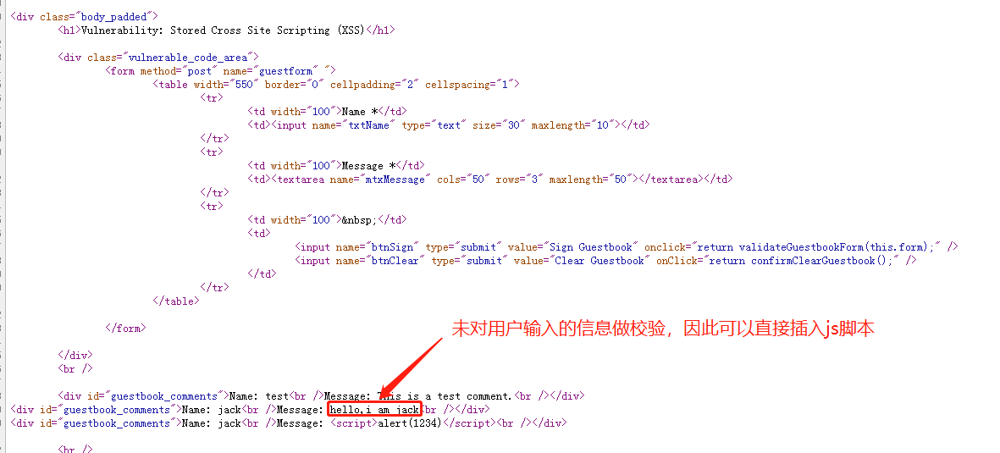

XSS介绍
XSS跨站脚本介绍
跨站脚本攻击（Cross Site Scripting）是指攻击者利用网站程序对用户输入过滤不足，输入可以显示在页面上对其他用户（普通用户、第三方用户、网站拥有者）造成影响的HTML+Js代码，从而盗取用户资料、利用用户身份进行某种动作或者对访问者进行病毒侵害的一种攻击方式。
为了与层叠样式表（Cascading Style Sheets）的缩写CSS区分开，跨站脚本攻击通常简写为XSS。
反射型XSS
发射型就是将应用程序的运行结果或错误返回到页面上显示。典型的反射型XSS是在搜索框里体现。
存储型XSS
存储在服务器、数据库（后台）上，能稳定持久执行的跨站脚本。
DOM型XSS
能够构成HTML的DOM树的一部分，或者能够影响DOM结构的跨站脚本。
XSS攻击方式与样例
XSS盗用用户信息
XSS盗取Cookie
XSS钓鱼攻击
链接上含有攻击代码
XSS蠕虫攻击
XSS蠕虫的破坏力和影响力都是巨大的。XSS蠕虫主要发生在用户之间存在交互行为的页面中，当Web引用程序对用户输入的数据信息没有做严格的过滤时，通过结合用户的登录状态、API调用、Ajax的异步提交，就可以实现在植入恶意代码的同时，将恶意代码进行对外发送，即实现了代码的感染和传播，也就形成了XSS蠕虫。
MySpace的Samy XSS蠕虫攻击事件是出现最早、最出名的XSS蠕虫攻击事件。
通过实验深入了解XSS三个分类
首先我们安装DVWA，使用账号：admin，密码：password进行登录
注意：如果登录不上去，就访问127.0.0.1/dvwa/setup.php，点击最下方的Create/Reset按钮
设置DVWA Security【从最低难度low开始吧】，点击submit等待刷新设置完成
DOM型XSS
首先我们看到下拉框，就要想一想，这个下拉框是从哪里来的。
我们可以F12刷新，看一下XHR请求【Ajax】
这里讲一下XHR和AJax的关系
XMLHttpRequest（简称XHR）对象用于和服务器交换数据，是基于XML的HTTP请求。XMLHttpRequest是一个浏览器接口，使得Javascript可以进行HTTP(S)通信。- 自从浏览器提供有了
XMLHTTPRequest这个接口之后，Ajax操作就此诞生。 - 我们再来说说什么是
Ajax，Ajax即Asynchronous JavaScript and XML，翻译为：异步的JavaScript和XML。【重点！！】 Ajax就是基于浏览器提供的XMLHttpRequest对象来实现的。【重点！！】
传统的网页（不使用 Ajax）如果需要更新内容，必需重载整个网页面。
自从有了Ajax之后，我们就可以实现异步地加载网页。
什么叫异步？
异步，异嘛，不同的意思，这里也就是指不跟浏览器加载执行网页代码的步伐一致，也就是说在一个网页中需要用户操作来触发执行代码，而不是整个网页代码一次性执行完毕(这里的用户操作是指在同一个网页下面请求代码执行渲染，而不是让浏览器直接跳转渲染另一个页面)。
Ajax指的是异步 JavaScript 和 XML（Asynchronous JavaScript and XML）。所以，XMLHttpRequest 对象如果要用于 Ajax 的话，其 open() 方法的 async 参数必须设置为 true。
xmlhttp.open("GET","ajax_test.html",true); |
所以表明，这个页面没有单独去请求一个功能链接来返回下拉链表内容。
因此，我们直接去看源代码，鼠标右键，查看源代码【XSS攻击是基于前台源码的攻击】。
搜索关键字符：
对于HTML的标签基本定义如下
<div> 标签定义 HTML 文档中的一个分隔区块或者一个区域部分。 |
其中，源码中显示这个form标签里面嵌有一段script标签引起的JavaScript代码
<script> |
主逻辑是：
获取当前form表单document的location对象的href（当前浏览的url值，对于下图就是http://127.0.0.1/DVWA/vulnerabilities/xss_d/）
然后判断这个url字符串中“default=”第一次出现的位置是否>=0
当然，我们回到刚刚的页面上就是在获取这个url
http://127.0.0.1/DVWA/vulnerabilities/xss_d/?default=English |
substring(start,stop)
然后截取从“default=”第一次出现的位置 + 8【也就是=号右边第一个字符，把整个“default=”跨了过去】到结尾的内容的字符串，保存到lang变量。
往document，也就是当前html页面的option标签的value值中写入刚刚获取到的lang值，其选项显示部分使用decoreURI对lang进行解码，由于English中未含有非英文部分，所以就是English。【这一步会往选项里再添加一个English】
接着往当前html页面的option标签里的value写入空，且关闭其选择属性，加入——这个选项。【这一步会往选项里再添加一个——】
那么，我们可以看到，这个lang是从当前url里获取到的，且未经过任何校验就直接写入标签中。
我们可以控制这个lang变量，使其直接执行js脚本
http://127.0.0.1/DVWA/vulnerabilities/xss_d/?default=<script>alert(/xss/)</script> |
其改变了当前HTML的页面DOM结构，因此，我们称其为DOM型XSS攻击。
反射型XSS
我们输入11111，结果看到页面回显了”Hello 11111”
看一下前台代码，是使用GET请求去将获取text的内容发送给服务器，而text我们可控
输入11111，会回显到前台。
那么，我们发现11111可能未经过处理，直接放入pre标签显示。
因此可以在pre标签里插入script标签，完成弹窗操作。
<script>alert(666)</script> |
因为这个页面将一些交互内容回显到了前台上，使得我们成功利用Js脚本完成攻击，我们称其为反射型XSS攻击。
存储型XSS
我们通过留言功能，可以看到我们的输入会被记录在页面上。
我们按照刚刚的思路，直接尝试看看能否弹窗。
Name：jack |
刷新回来后会一直弹窗
我们看下源码信息

我们看到Name的maxlength为10，Message的length为50，所以使用Message来做XSS攻击更合适一些
<script>alert()</script> |
如果两个长度都不限，则都适合用来XSS攻击。